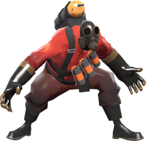

Jasmins Blog
April 27, 2020
Jasmin wanted a blog to be able to post all sorts of random stuff about herself so we made it happen.
A Little About Her
Jasmin Baker is a pretty cool person. She loves to game more than anything and will talk your ear off on something she enjoys. When it comes down to it, she'll always be there to "squad" up with you. You can always count on her to beign online when you want to play. Lately She has gotten into some more FPS style games like COD or Overwatch, which is pretty cool. She is going to be going off to bootcamp soon so be sure to stay posted because I'll update how she is and when/where she'll be going after it's all over. Jamin's Favorite color(if you couln't already guess) is Purple. She loves all sorts of different music and loves her dogs. She just recently got a new pet rat and her name is "Conchita."
Favorites
Her favorite Character to play in Team Fortress 2 is the Pyro.
|

|
She has over 800+ hours on just Team Fortress 2 so anyone trying to 1v1 her better watch out. She'll murk you and make it look like an accident.she has a total of 348 out of 520 achievements on this so She has devoted a lot of her time and life lmao. What a nerd. Anyways, She loves taking her dog(Charlie) on walks and what not. I wish i had a picture of him but she didn't send me any so put her on blast not me. Anyways, I think this is enough for now. Jasmin, I hope you like it.
Team Fortress 2
Diablo
Battle Brawlers

Journey
Wizard 101
God Of War
Tamales
Marteen- Sriracha
Don Toliver - No Idea
Vixx- Butterfly Effect
Favorite Holiday
Saint Patrick's Day!

Jasmin Baker